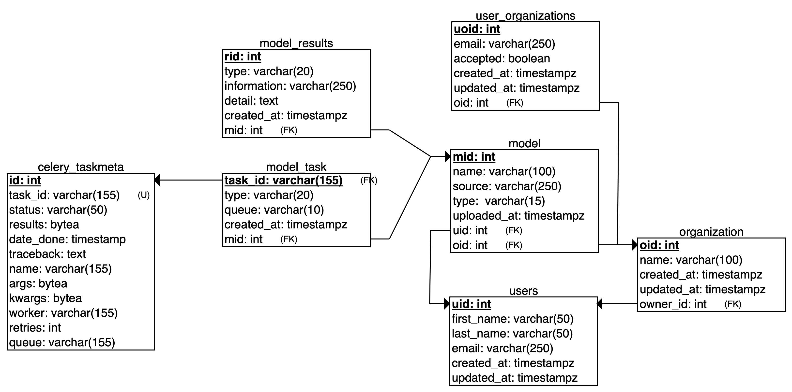

Team Members
- Fernando Davis
- fernando.davis@upr.edu
- Gabriel Rosa
- gabriel.rosa4@upr.edu
- Carolina Santiago
- carolina.santiago5@upr.edu
- Enrique Viera
- enrique.viera@upr.edu
Professor: Dr. Wilson Rivera
System Architecture

Database

Team Roles
Gabriel Rosa - Backend Developer
- In charge of the database and back-end development. Will develop the database in PostgreSQL and the backend in Python.
Enrique Viera - Middleware Developer
- In charge of routing between front and back end. Will help with development of some front-end features and back-end changes.
Fernando Davis - Machine Learning Scientist
- In charge of optimizing and benchmarking code the machine learning models in Python using various libraries.
- The development of the code for Machine Learning will be done in Python.
Carolina Santiago Pérez - Frontend Developer
- Will lead the front-end features. Develops the different pages of the application using Node.
About the project
This project is part of the course CIIC4151 of the Department of Computer Science and Engineering. University of Puerto Rico, Mayaguez Campus.